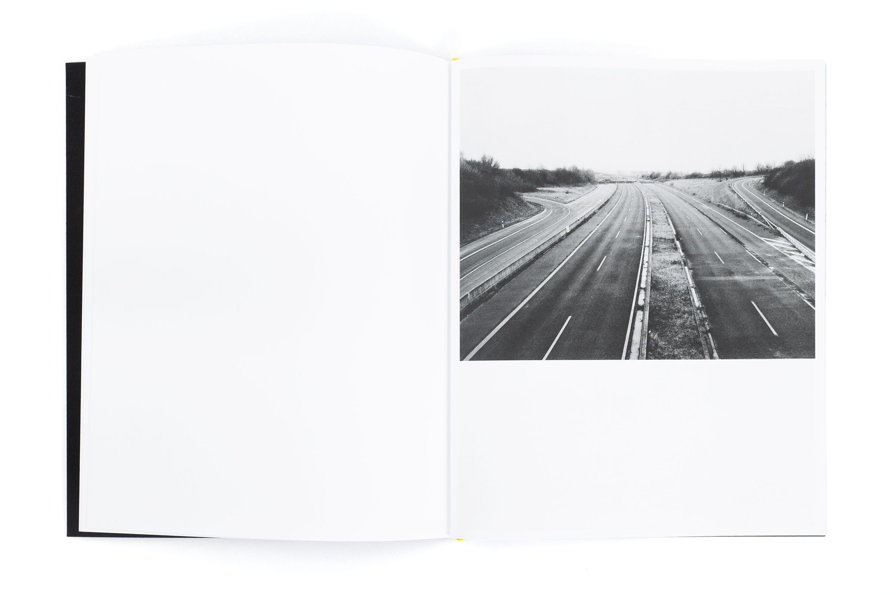
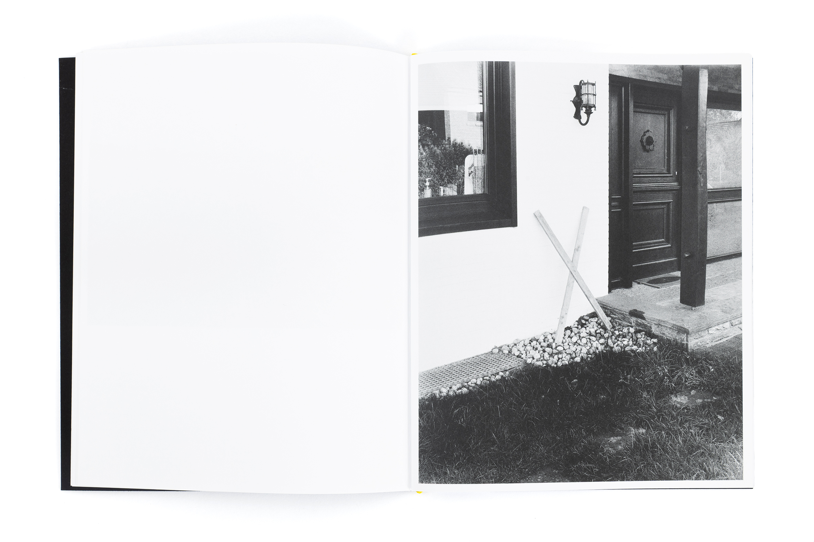
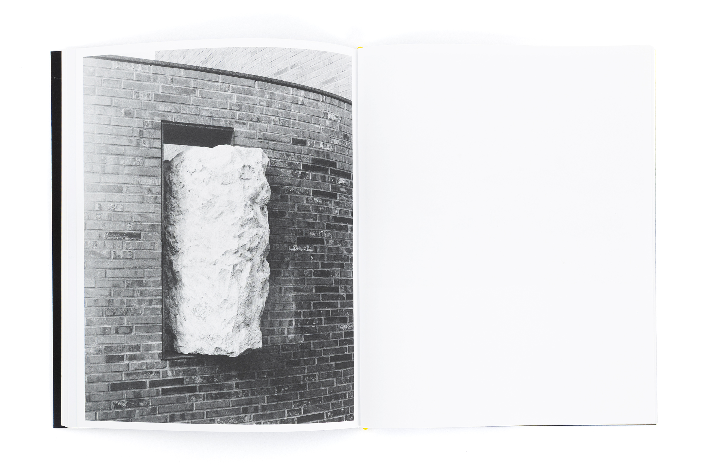
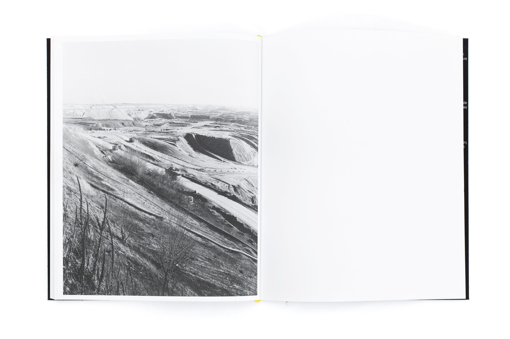
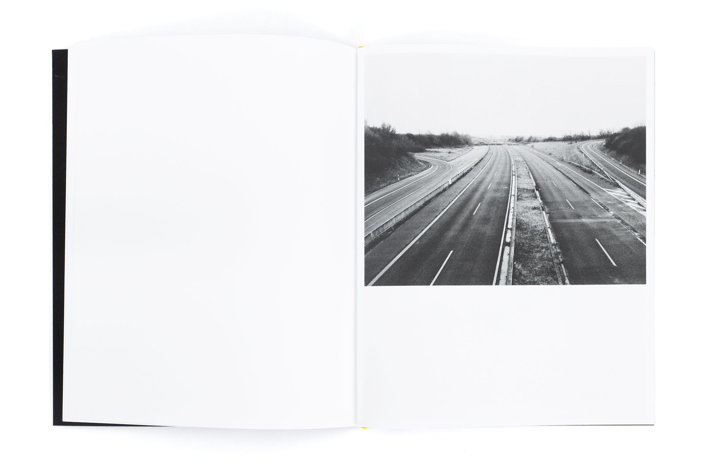
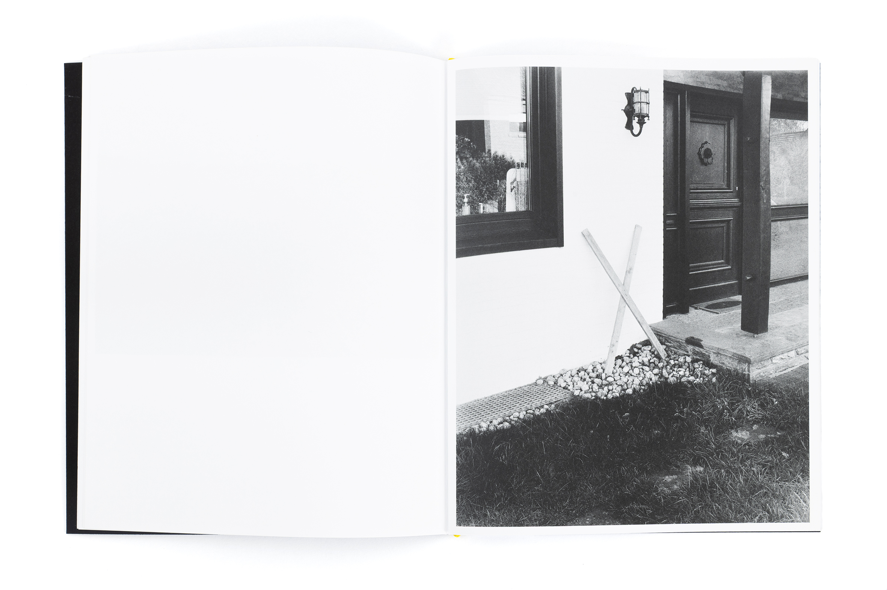
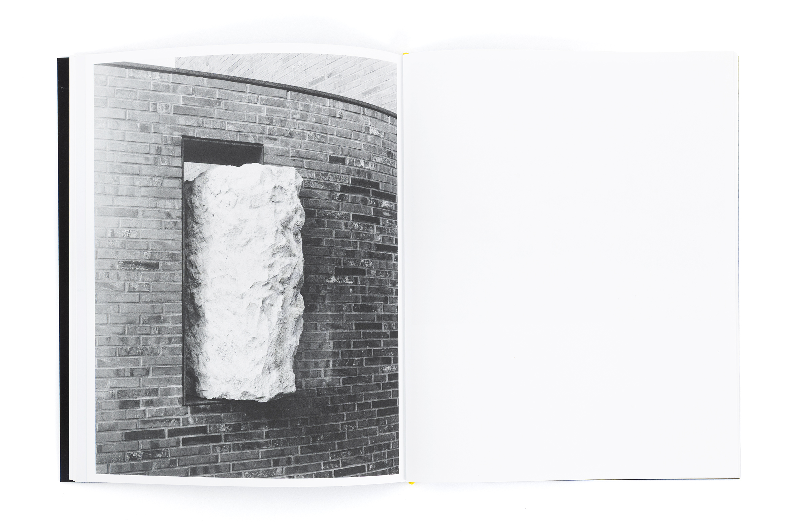
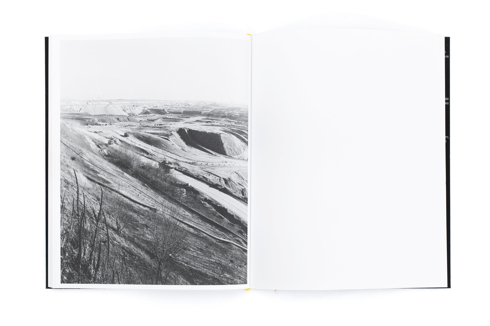

📚 THE ART OF LIVING TWICE - SIMEN K.LAMBRECHT
Photographies : Simen K.Lambrecht
400 exemplaires
24x29cm
124 pages
Magno Volume 150 gr/m²
Couverture en velour
Couverture : Emma Corbique
Prix: 45€
Frais de port (EU): 7€
📚 NEU- - LUCAS CASTEL

 






 Photographies : Lucas Castel
300 exemplaires
20x25cm
68 pages
Munken Lynx Rough 120 gr/m²
Luxoart gloss 115g gr/m²
Fedrigoni ultra black Sirio 115 et 280 gr/m²
Couverture en sérigraphie par Juno Semesa (BE)
Offsett par Drifosett (BE)
Prix: 25€
Frais de port (EU): 7€
Remise en mains propres possible à Bruxelles et à Paris.
📚 CATARACTA SOLIS - ANNA HAILLOT
Photographies : Anna Haillot
150 exemplaires
17x34cm
96 pages
G-Print 115 gr/m²
Imprimés par Graphius (BE)
Prix: 28€
Frais de port (EU): 7€
Remise en mains propres possible à Bruxelles.
📚 LA NUIT, TU MENS - AMBRE HUSSON
Photographies : Ambre Husson
Couverture : Ambre Husson
400 exemplaires
25x34cm
52 pages
Munken Cream 90g/m²
Sirio Black 80g/m²
Savile Raw Plain Blue 300g/m²
Nominette par ABC marquage
Imprimés par Drifosett (BE)
Prix: 25€
Frais de port (EU): 7€
Remise en mains propres possible à Bruxelles.
📻 QUELQUES PIÈCES ET VESTIGES - DJ GERARD / ÉPUISÉ
Musique : DJ Gerard aka Victor Gerard
Graphisme : Victor Gerard
15 exemplaires
2x25min
Gravé par les Editions la CAB
Prix: 8€
Frais de port (EU): 7€
📚 ON EST VENUS ICI POUR LA VUE - PAULINE VANDEN NESTE ET TOM LYON / DERNIÈRES COPIES

Photographies : Pauline Vanden Neste et Tom Lyon
Couverture : Etienne Martinet
200 exemplaires
21x26,5cm
100 pages
Arena Smooth 120g/m²
Imprimés par KOPA (Kaunas-LI)
Prix: 35€
Frais de port (EU): 7€
Remise en mains propres possible à Bruxelles.
📚 1 HEURE ET 1 KILOMÈTRE - ALAN JEULAND / ÉPUISÉ
Photographies prises à Toulouse
Couverture : Brigade Cynophile
50 exemplaires
24x30cm
44 pages
Holmen
Imprimés par ClickClickGraphics
Prix : 18€
Frais de port (EU): 7€
Total : 0.00 €